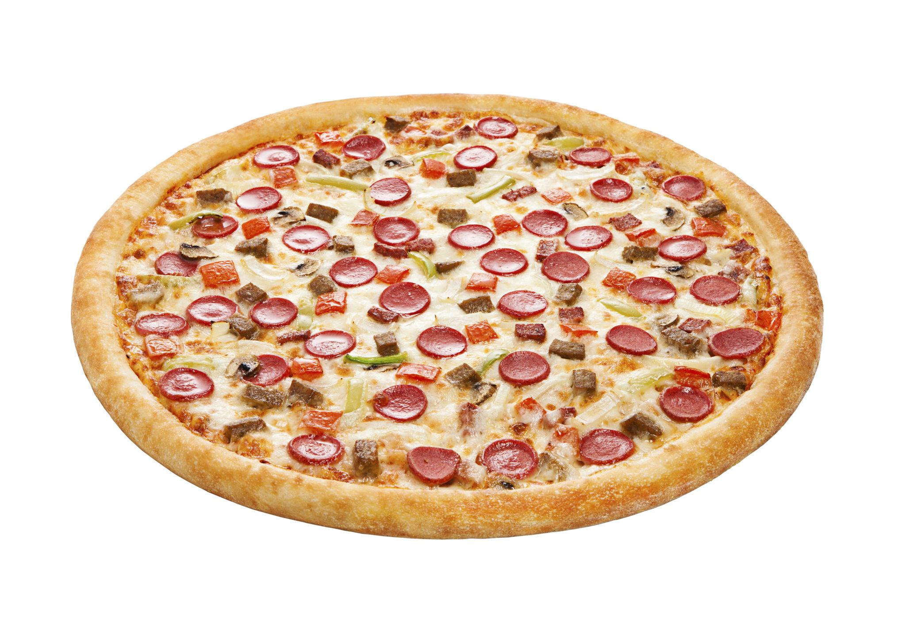

Pizza

Description
Pizza is a popular Italian dish made with a round base of dough topped with tomato sauce, melted cheese, and a variety of toppings. It is baked until the crust is golden and the cheese is hot and bubbly.
It can be made with many different toppings, such as pepperoni, vegetables, mushrooms, or olives, making it an easy dish to customize to your taste.
Ingredients
- Pizza dough
- Tomato sauce
- Mozzarella cheese
- Pepperoni
- Olive oil
- Salt
- Black pepper
Steps
- Preheat the oven to 220°C (425°F).
- Roll out the pizza dough on a lightly floured surface.
- Spread the tomato sauce evenly over the dough.
- Sprinkle the mozzarella cheese over the sauce.
- Add the pepperoni evenly across the pizza.
- Drizzle a small amount of olive oil over the top.
- Season with salt and black pepper.
- Bake for 12–15 minutes, or until the crust is golden and the cheese is melted.
- Remove the pizza from the oven and let it cool for a few minutes.
- Slice and serve.
Home Page